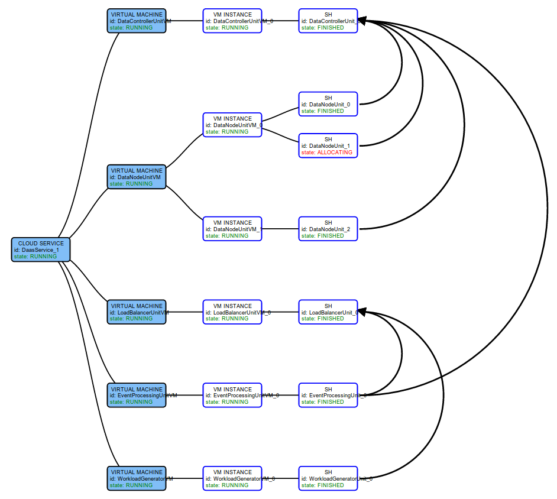
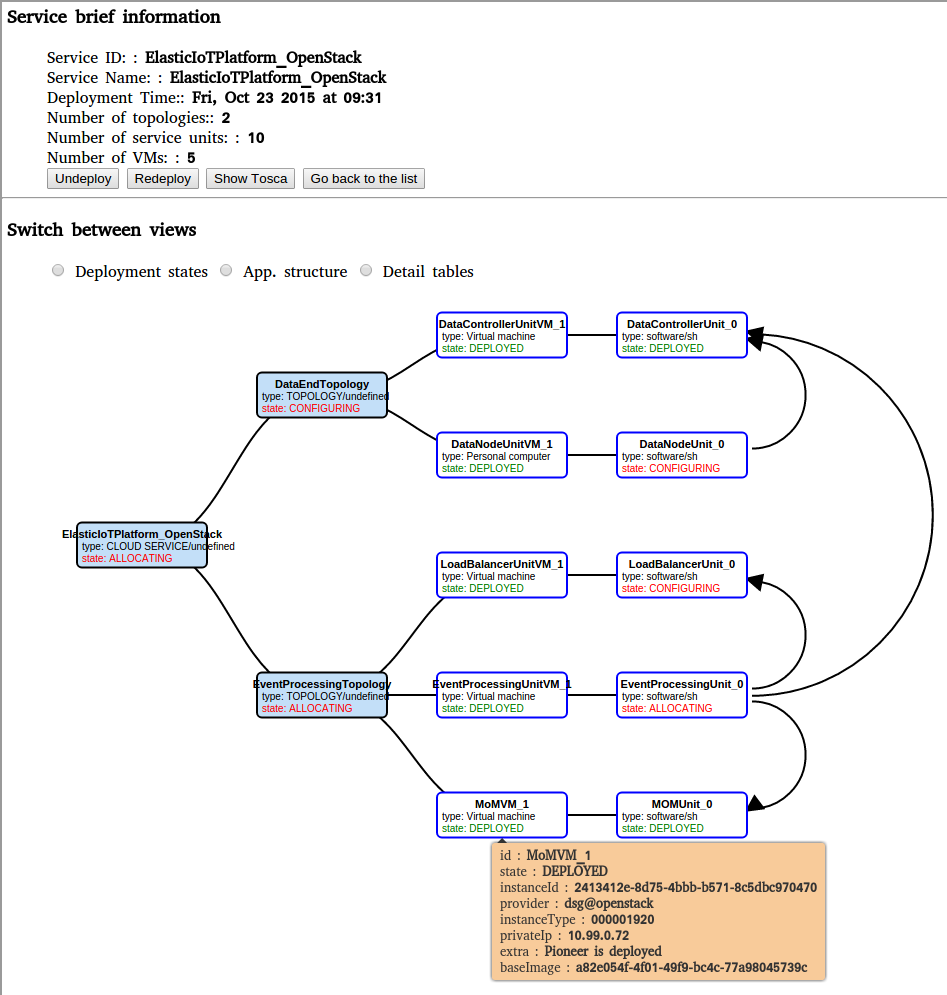
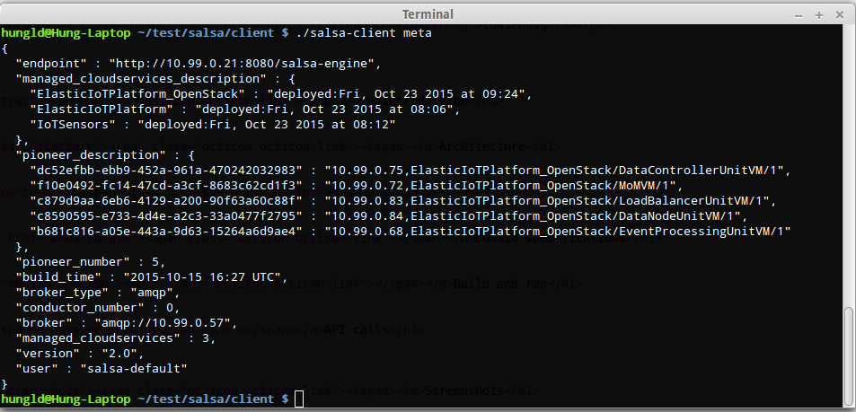

SALSA
A Framework for Dynamic Configuration of IoT Cloud Systems
Sources
Documentation
- Introduction
- Architecture
- How-to-use
- Domain-specs
- Build & run
- APIs
- For developers
- Hands-on
- Screenshots
- Publications
- Contact us
Maintained by tuwiendsg

Introduction
Architecture
How-to-use
Domain specifications
Build and run
For developers
API calls
Screenshots

The list of the managed services

The configuration process

Salsa-client queries the status of salsa-engine
Publications
- Duc-Hung Le, Hong-Linh Truong, Georgiana Copil, Stefan Nastic, Schahram Dustdar, "SALSA: a Framework for Dynamic Configuration of Cloud Services", (PDF), 6th International Conference on Cloud Computing Technology and Science, 15-18 December 2014, Singapore. Accepted
Contact
Please contact Le Duc Hung d.le [at] dsg.tuwien.ac.at and/or Hong-Linh Truong truong [at] dsg.tuwien.ac.at for any kind of issue.